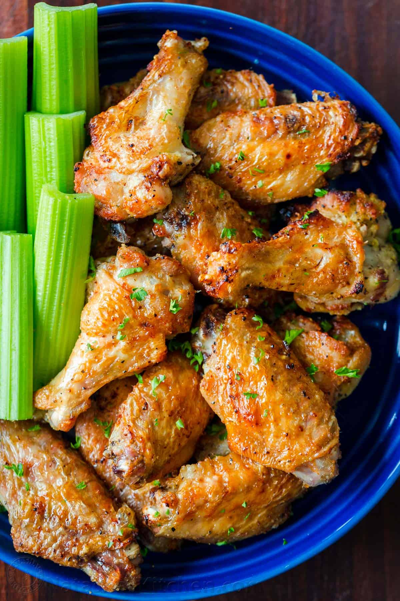

Air Fryer Chicken Wings

Description
Fried chicken wings are delicious, but they make a big mess. These air fryer wings are super easy, and they're just as crunchy as the deep-fried kind.
Ingredients
- 2 lb. chicken wings
- Kosher salt
- Freshly ground black pepper
- Nonstick cooking spray
- 1/4 c. hot sauce (such as Frank's)
- 4 tbsp. melted butter
- 1 tsp. Worcestershire sauce
- 1/2 tsp. garlic powder
- Blue cheese dressing, for serving
Directions
- Season wings all over with salt and pepper, and coat the inside of air fryer with nonstick cooking spray.
- Set air fryer to 380° and cook wings 12 minutes. Remove air fryer tray, flip wings, and cook 12 minutes more. Increase heat to 400° and cook 5 minutes more.
- Meanwhile, in a large bowl, whisk to combine hot sauce, butter, Worcestershire sauce, and garlic powder. Add cooked wings and toss gently to coat. Serve hot with blue cheese dressing for dipping.